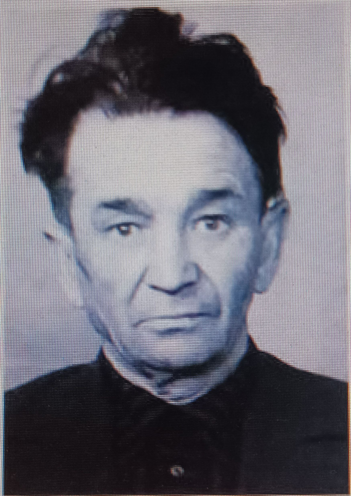
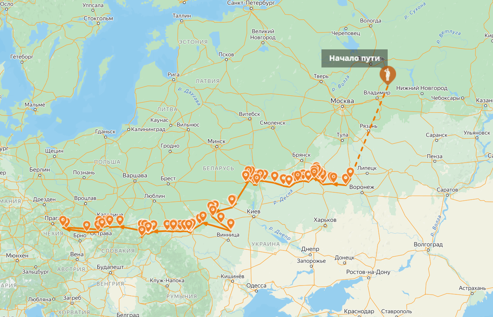

Галерея


Вспоминим героя, защитившего Родину...
01.06.1912 — 03.12.1980
Место рождения: Татарская АССР, Мамадышский район, Катмышское сельское поселение, село Еникей Чишма
Гильманов Гибадулла Гильманович родился 1 июня 1912 года в селе Еникей Чишма Мамадышского района Татарской АССР. В октябре 1934 года был призван на действительную службу в 371 стрелковый полк, где служил по сентябрь 1936 года. В 1940 году участвовал в Советско-финляндской войне. 28 июня 1941 года был призван на Великую Отечественную войну в 85 стрелковый полк на должность командира стрелковой роты. С 15 февраля 1943 года по 9 мая 1945 года служил шофером в составе 341 отдельной автомобильной роты 140 стрелковой дивизии. Воевал на Центральном фронте с 15 февраля 1943 года, с 8 августа 1943 года — в составе I Белорусского фронта, а с 16 декабря 1943 по 25 ноября 1944 года — на 4 Украинском фронте. За боевые заслуги награжден орденом Красной Звезды, медалью за победу над Германией, медалью за пройденный путь с боями от Орловской Красной дуги до Праги и победоносного завершения Великой Отечественной войны. Также получил Благодарность Верховного Главнокомандующего И.В. Сталина за образцовое выполнение боевых заданий.
Гильманов Гибадулла Гильманович имеет благодарности за:
а также за прорыв обороны немцев под Ямполем в Западной Украине в марте 1944 года. Победу встретил в звании старшего сержанта в Чехии в городе Оломоуц.
В каких-то из этих боевых действий участвовал мой прадед.
